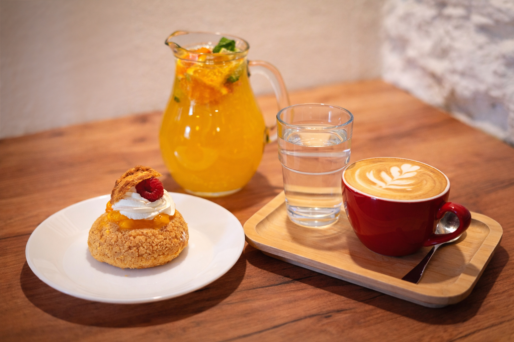
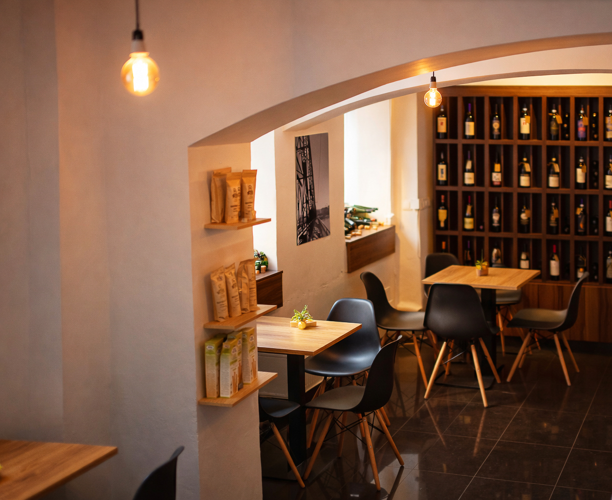
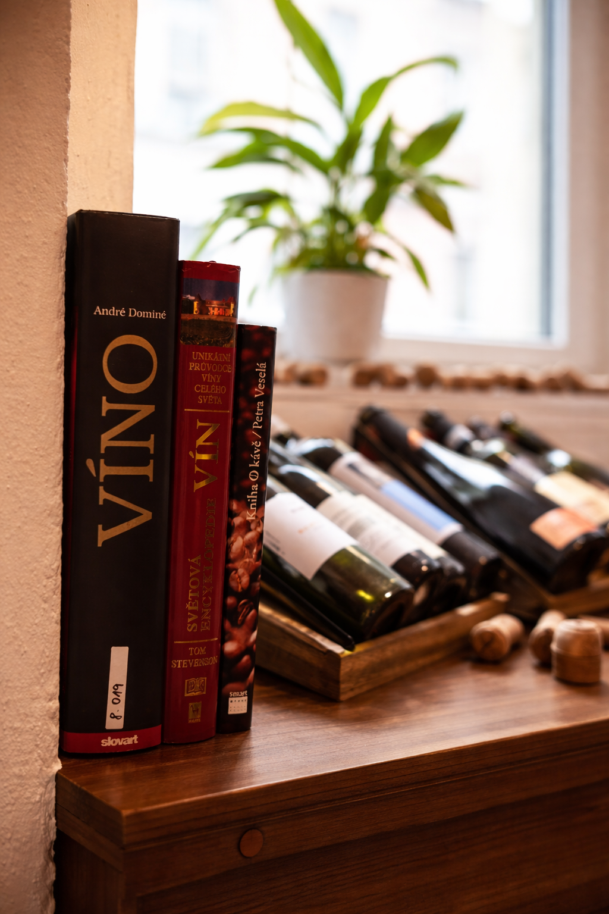
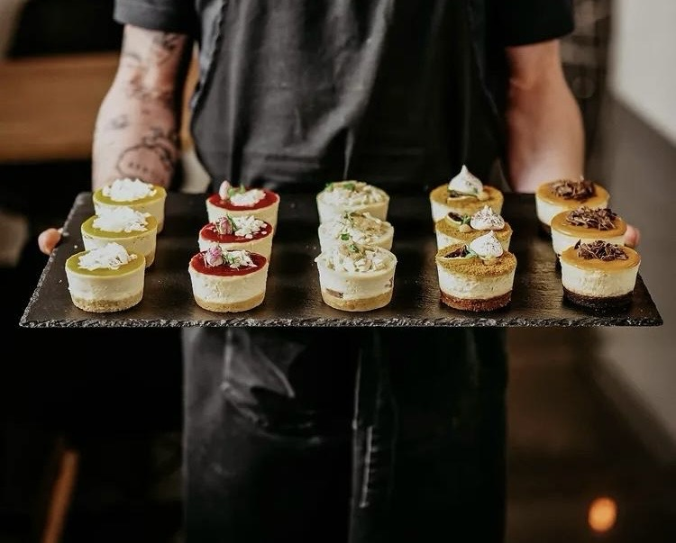
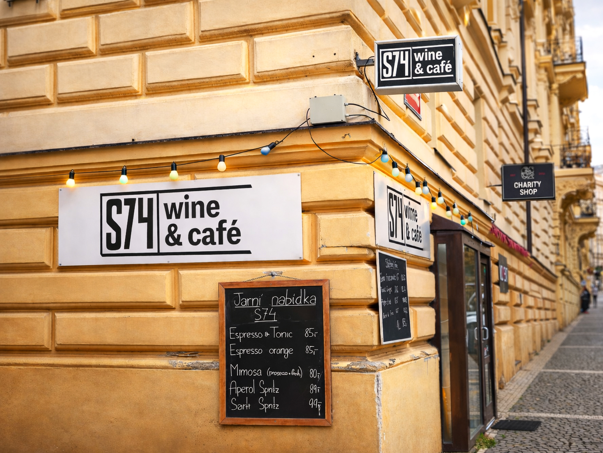
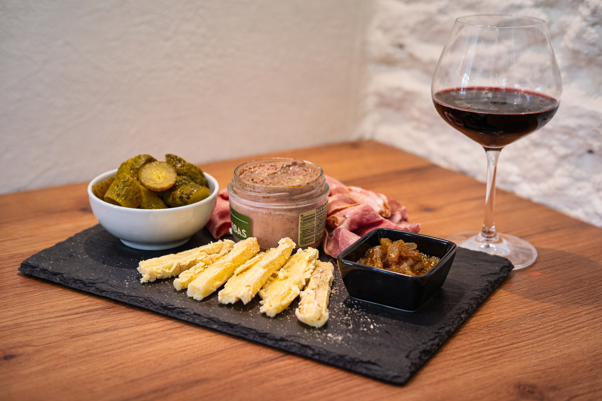

Výběrová káva
Espresso, cappuccino i filtr.

O nás
S74 je komorní kavárna a wine bar na Vinohradech, kousek od Jiřího z Poděbrad. Přes den podáváme výběrovou kávu, limonády a dezerty; večer vína na sklenku i lahve.

Espresso, cappuccino i filtr.

Na sklenku i po lahvích.

Sladké ke kávě.

Klidná rána, dlouhé večery.

Co se děje v S74
Novinky a chystané akce sdílíme na Instagramu. Chcete mít jisté místo? Rezervujte si stůl online.
Chystáte soukromé setkání? Napište nám.
Návštěva
Po–Pá 9:30–22:00
So–Ne 15:00–22:00
Prakticky
Slezská 856/74, 130 00 Praha 3–Vinohrady.
Obojí. Přes den podáváme kávu, limonády a dezerty; večer vína na sklenku i lahve.
Po–Pá 9:30–22:00, So–Ne 15:00–22:00.
Online přes rezervační systém Tebi přímo na této stránce.